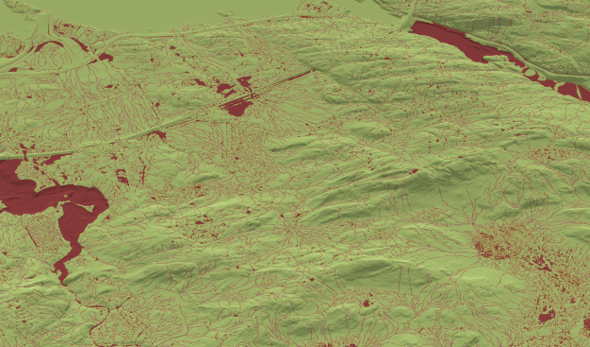

What is SWIM?
SWIM (Surface Water Integrated Modeling) is an open-source software package for static modeling and prediction of surface water and urban flooding based on analysis of terrain topography. It is developed and maintained by the Applied Computational Science research group at SINTEF Digital.
SWIM consists of a collection of algorithms for analysing terrain, identifying watershed boundaries, and providing a better understanding of how water accumulates and moves through the landscape. This is valuable for various purposes, such as water resource management, flood modeling, and environmental planning.
Our algorithms originate from work on CO2 storage and are based on an assumption of infinitesimal flow. These so-called spill-point analyses were later modified to model flooding in urban areas. Spill-point analyses are highly computationally efficient compared to tools based on numerical simulation. This makes it easy to work interactively and test out various scenarios and measures. SWIM offers some unique functionality, such as simplified infiltration models (both permeable and impermeable surfaecs) and the calculation of time series that models how water accumulates or drains over time, without having to resort to computationally intensive numerical time-stepping approaches.
Functionality
SWIM is a set of tools that is intended to provide a flexible foundation for further development. Current functionality includes:
- Static surface models
- Calculation of catchment areas, waterways, and hierarchical networks of intermittent streams, ponds and lakes
- Accumulation areas for water, topological network of ponds, and how they connect and merge together
- Permanent water volumes such as rivers, lakes, and seas
- Dynamic analysis
- Terrain response to precipitation events and infiltration over time
- Routing of water as ponds overflow
- Terrain characteristics and infrastructure
- Buildings, obstacles, drainage, and measures
- Simplified infiltration model that supports both permeable and impermeable surfaces
- Basic IO and visualization routines

System of lakes and rivers identified in the watershed analysis.
Learn more
The best way to get introduced to SWIM is probably to have a look at the provided examples. The Urban landscape example provides an introduction to key SWIM functionality applied to a real dataset of a district in central Oslo. The Simple synthetic example uses an extremely simplified surface to explain and demonstrate some key concepts. The Handling flat areas example is a small example to show how large, flat water bodies can be identified and kept separate from the analysis.